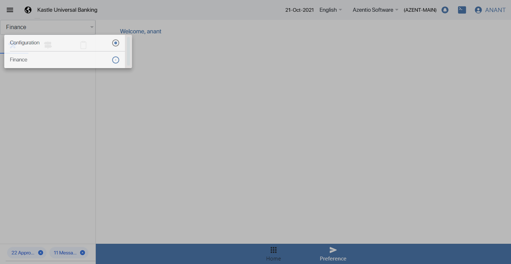
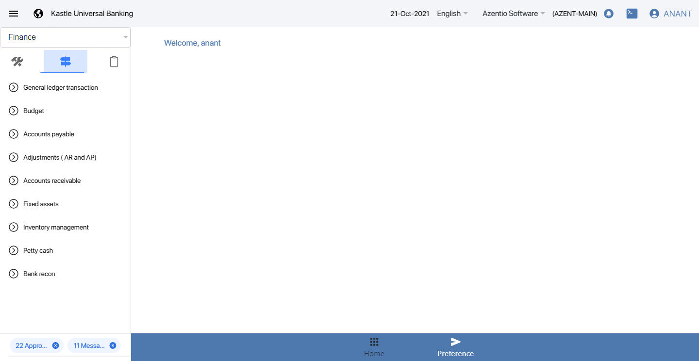

-
System should display notification to checker2 user for approving/rejecting the task or record
22:58:51 PM / 01:23:349 Fail
System should display notification to checker2 user for approving/rejecting the task or record
01.02.2022 22:58:51 01.02.2022 23:00:14 01:23:349 · #test-id=1Fail(UAT_006_007)If transfering budget code does not have sufficeint amount to transfer for the monthWhen user login into maker stagestepdefinitions.HooksClass.addScreenshot(io.cucumber.java.Scenario)screenshotThen user click on configurationstepdefinitions.HooksClass.addScreenshot(io.cucumber.java.Scenario)screenshotThen user click on the finance buttonstepdefinitions.HooksClass.addScreenshot(io.cucumber.java.Scenario)screenshotThen click on directionstepdefinitions.HooksClass.addScreenshot(io.cucumber.java.Scenario)screenshotThen click on budget buttonstepdefinitions.HooksClass.addScreenshot(io.cucumber.java.Scenario)screenshotThen click on transfer eye buttonstepdefinitions.HooksClass.addScreenshot(io.cucumber.java.Scenario)Then click on add button in transferStep skippedThen fill the form and enter excessive budget amount to transferStep skippedstepdefinitions.HooksClass.TearDown(io.cucumber.java.Scenario)
Started
Jan 2, 2022 10:58:49 PM
Ended
Jan 2, 2022 11:00:14 PM
Features Passed
0
Features Failed
1
Features
Scenarios
Steps
Timeline
Tags
| Name | Passed | Failed | Skipped | Others | Passed % |
|---|---|---|---|---|---|
| @006_007 | 0 | 1 | 0 | 0 | 0% |
System/Environment
| Name | Value |
|---|---|
| version | 10 |
| os | windows |
-
@006_007
1 tests
@006_007
1 failedStatus Timestamp TestName Fail 22:58:51 PM (UAT_006_007)If transfering budget code does not have sufficeint amount to transfer for the month System should display notification to checker2 user for approving/rejecting the task or record.(UAT_006_007)If transfering budget code does not have sufficeint amount to transfer for the month
-
org.openqa.selenium.WebDriverException
1 tests
org.openqa.selenium.WebDriverException
1 failedStatus Timestamp TestName Fail 22:59:09 PM Then click on transfer eye button System should display notification to checker2 user for approving/rejecting the task or record.(UAT_006_007)If transfering budget code does not have sufficeint amount to transfer for the month.Then click on transfer eye buttonFail 23:00:02 PM stepdefinitions.HooksClass.addScreenshot(io.cucumber.java.Scenario) System should display notification to checker2 user for approving/rejecting the task or record.(UAT_006_007)If transfering budget code does not have sufficeint amount to transfer for the month.stepdefinitions.HooksClass.addScreenshot(io.cucumber.java.Scenario)Fail 23:00:14 PM stepdefinitions.HooksClass.TearDown(io.cucumber.java.Scenario) System should display notification to checker2 user for approving/rejecting the task or record.(UAT_006_007)If transfering budget code does not have sufficeint amount to transfer for the month.stepdefinitions.HooksClass.TearDown(io.cucumber.java.Scenario)